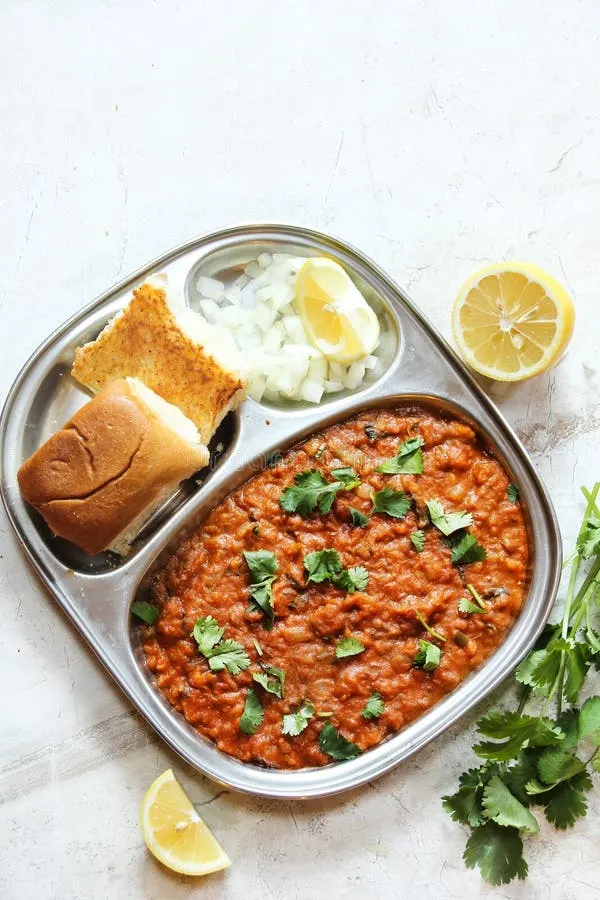

Pav Bhaji
⏱ Prep: 10 mins
🔥 Cook: 25 mins
🍽 Serves: 4
Ingredients
- 4 potatoes (boiled & mashed)
- 1 cup mixed vegetables
- 2 onions, chopped
- Pav Bhaji masala
- Butter (a lot 😄)
- Pav buns
Steps
- Sauté onions in butter.
- Add vegetables and mash.
- Add spices and simmer.
- Toast pav in butter and serve.